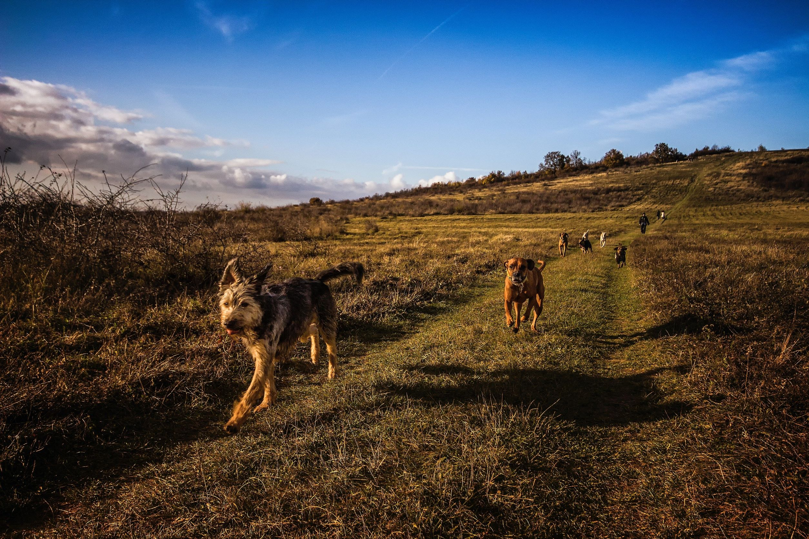
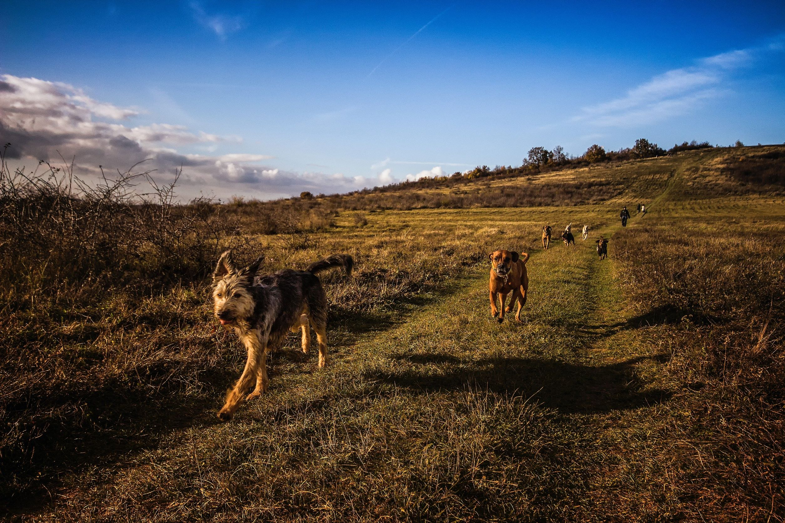

Balades
06 11 54 77 34
 


Balade éducative :
30€ l'heure
Ses balades permettent à votre chien de se défouler, de rencontrer ses congénères et de combler ses besoins physiques et mentaux dans un cadre éducatif. En résumé, pour vous propriétaire, c'est le moyen de renforcer votre relation avec votre compagnon de manière détendue: le chien dépensé est plus réceptif. Cela facilite l'apprentissage et le décryptage du comportement de votre compagnon.
C'est également l'occasion idéale pour corriger vos postures, votre voix ou votre gestuelle. Bref, c'est un moment de partage favorable au rapprochement et à l'éducation de votre chien.
Balade sociale :
15€ l'heure (petit groupe maxi 4 chiens)
C'est un moment de détente où rien n'est demandé à votre animal, cela lui permet de combler ses besoins physiques et d'avoir des interactions avec d'autres chiens.
Ainsi, vous renforcez votre complicité et apprivoisez au mieux votre compagnon.
Les balades sociales se font par tailles et par affinités.
Prérequis : un bilan devra être effectué par mes soins pour pouvoir intégrer le groupe.